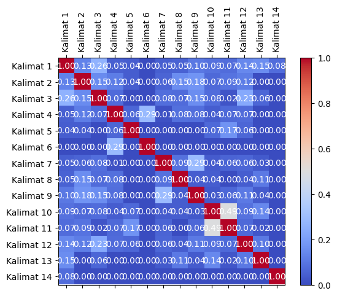
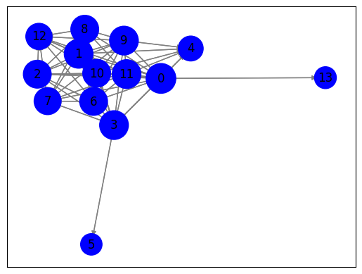
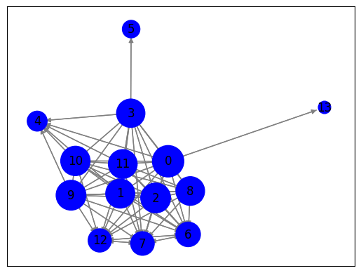

Crawling 1 Berita#
#melakukan web scraping pada halaman berita yang berasal dari URL
import requests
from bs4 import BeautifulSoup
import nltk
# Unduh konten halaman web berita
url = "https://www.antaranews.com/berita/3799398/mukti-ali-dituntut-6-tahun-penjara"
response = requests.get(url)
html = response.text
# Parsing halaman web menggunakan BeautifulSoup
soup = BeautifulSoup(html, 'html.parser')
# Ekstraksi teks dari elemen-elemen yang berisi berita
article = soup.find('div', class_="post-content clearfix") # Sesuaikan dengan struktur HTML halaman web berita
# Periksa apakah elemen article ada sebelum mencoba mengambil teksnya
if article is not None:
article_text = article.get_text()
# Tokenisasi teks menjadi kalimat menggunakan nltk
nltk.download('punkt') # Pastikan Anda sudah mengunduh tokenisasi kalimat nltk
sentences = nltk.sent_tokenize(article_text)
# Cetak kalimat-kalimat
for sentence in sentences:
print(sentence)
else:
print("Elemen berita tidak ditemukan")
Jakarta (ANTARA) - Jaksa penuntut umum (JPU) pada Kejaksaan Agung (Kejagung) RI menuntut Account Director of Integrated Account Departement PT Huawei Tech Investment Mukti Ali selama 6 tahun dan membayar denda Rp500 juta subsider 6 bulan pidana kurungan dalam perkara korupsi BTS 4G Kementerian Komunikasi dan Informatika (Kemenkominfo).
"Menjatuhkan pidana terhadap terdakwa Mukti Ali selama 6 tahun dikurangi sepenuhnya dengan lamanya terdakwa ditahan dengan perintah agar terdakwa tetap dilakukan penahanan di rutan," kata jaksa dalam persidangan di Pengadilan Tindak Pidana Korupsi (Tipikor) pada Pengadilan Negeri Jakarta Pusat, Senin.
Jaksa menyatakan bahwa terdakwa Mukti Ali terbukti secara sah dan meyakinkan bersalah menurut hukum turut serta dalam melakukan tindak pidana korupsi BTS 4G Kementerian Komunikasi dan Informatika (Kemenkominfo).
Mukti didakwa telah melanggar Pasal 2 ayat (1) juncto Pasal 18 Undang-Undang Nomor 31 Tahun 1999 tentang Pemberantasan Tindak Pidana Korupsi sebagaimana diubah dengan UU No.
20 Tahun 2001 jo.
Pasal 55 ayat (1) ke-1 KUHP.
Sementara itu, hal-hal yang memberatkan terdakwa adalah perbuatannya tidak mendukung program pemerintah dalam rangka penyelenggaraan negara yang bersih dari korupsi, kolusi, dan nepotisme.
"Perbuatan terdakwa bersama-sama dengan terdakwa lain telah mengakibatkan kerugian keuangan negara sebesar Rp8.032.084.133.795,51," ungkap jaksa.
Adapun hal-hal yang meringankan Mukti Ali adalah terdakwa belum pernah dihukum, bersikap sopan selama persidangan, dan tidak menikmati hasil dari tindak pidana korupsi.
Baca juga: Irwan Hermawan dituntut 6 tahun penjara terkait korupsi BTS 4G
Baca juga: Galumbang Menak dituntut 15 tahun penjara dalam kasus BTS 4G
Sidang tuntutan ini digelar bersamaan dengan tuntutan dua terdakwa lainnya, yakni Komisaris PT Solitech Media Sinergy Irwan Hermawan dan eks Direktur Utama PT Mora Telematika Indonesia Galumbang Menak Simanjuntak.
Irwan Hermawan dituntut pidana penjara selama 6 tahun, sementara Galumbang Menak dituntut 15 tahun.
Para terdakwa diduga melakukan tindak pidana korupsi penyediaan infrastruktur base transceiver station (BTS) 4G dan infrastruktur pendukung paket 1, 2, 3, 4, dan 5 BAKTI Kemenkominfo pada tahun 2020–2022.
Pada surat dakwaan disebutkan bahwa sejumlah pihak mendapat keuntungan dari proyek pembangunan tersebut, yaitu mantan Menteri Kominfo Johnny G. Plate menerima uang sebesar Rp17.848.308.000,00; mantan Direktur Utama Bakti Kominfo Anang Achmad Latif menerima uang Rp5 miliar; dan tenaga ahli Human Development Universitas Indonesia Yohan Suryanto menerima Rp453.608.400,00.
Selanjutnya, Irwan Hermawan selaku Komisaris PT Solitechmedia Sinergy menerima Rp119 miliar; Windi Purnama selaku Direktur PT Multimedia Berdikari Sejahtera menerima Rp500 juta; Muhammad Yusrizki selaku Direktur PT Basis Utama Prima menerima Rp50 miliar dan 2,5 juta dolar AS; Konsorsium FiberHome PT Telkominfra PT Multi Trans Data (PT MTD) untuk Paket 1 dan 2 menerima Rp2.940.870.824.490,00; Konsorsium Lintasarta Huawei SEI untuk paket 3 menerima Rp1.584.914.620.955,00; dan Konsorsium IBS dan ZTE Paket 4 dan 5 mendapat Rp3.504.518.715.600,00.Pewarta: Rivan Awal LinggaEditor: D.Dj.
Kliwantoro COPYRIGHT © ANTARA 2023
[nltk_data] Downloading package punkt to /root/nltk_data...
[nltk_data] Package punkt is already up-to-date!
!pip install Sastrawi
import nltk
import warnings
import pandas as pd
import numpy as np
import re
import csv
from nltk.tokenize import word_tokenize
from nltk.corpus import stopwords
from sklearn.feature_extraction.text import TfidfVectorizer
from sklearn.feature_extraction.text import CountVectorizer
from Sastrawi.Stemmer.StemmerFactory import StemmerFactory
Requirement already satisfied: Sastrawi in /usr/local/lib/python3.10/dist-packages (1.0.1)
# Preprocessing
# Lowercasing
article_text = article_text.lower()
# Cleaning
article_text = ''.join(e for e in article_text if (e.isalnum() or e.isspace() or e == '.'))
# Hapus Angka
article_text = ''.join([char for char in article_text if not char.isdigit()])
# Tokenisasi teks menjadi kalimat menggunakan nltk
nltk.download('punkt')
sentences = nltk.sent_tokenize(article_text)
# Tokenisasi setiap kalimat menjadi kata-kata
words = [nltk.word_tokenize(sentence) for sentence in sentences]
[nltk_data] Downloading package punkt to /root/nltk_data...
[nltk_data] Package punkt is already up-to-date!
# Stopword Removal
from nltk.corpus import stopwords
stop_words = set(stopwords.words('indonesian'))
filtered_sentences = []
for sentence in words:
filtered_sentence = [word for word in sentence if word.lower() not in stop_words]
filtered_sentences.append(filtered_sentence)
# Cetak kalimat-kalimat yang telah diproses
for filtered_sentence in filtered_sentences:
print(filtered_sentence)
# Tutup respons setelah digunakan
response.close()
['jakarta', 'jaksa', 'penuntut', 'jpu', 'kejaksaan', 'agung', 'kejagung', 'ri', 'menuntut', 'account', 'director', 'of', 'integrated', 'account', 'departement', 'pt', 'huawei', 'tech', 'investment', 'mukti', 'ali', 'membayar', 'denda', 'rp', 'juta', 'subsider', 'pidana', 'kurungan', 'perkara', 'korupsi', 'bts', 'g', 'kementerian', 'komunikasi', 'informatika', 'kemenkominfo', '.']
['menjatuhkan', 'pidana', 'terdakwa', 'mukti', 'ali', 'dikurangi', 'sepenuhnya', 'terdakwa', 'ditahan', 'perintah', 'terdakwa', 'penahanan', 'rutan', 'jaksa', 'persidangan', 'pengadilan', 'tindak', 'pidana', 'korupsi', 'tipikor', 'pengadilan', 'negeri', 'jakarta', 'pusat', 'senin', '.']
['jaksa', 'terdakwa', 'mukti', 'ali', 'terbukti', 'sah', 'bersalah', 'hukum', 'tindak', 'pidana', 'korupsi', 'bts', 'g', 'kementerian', 'komunikasi', 'informatika', 'kemenkominfo', '.']
['mukti', 'didakwa', 'melanggar', 'pasal', 'ayat', 'juncto', 'pasal', 'undangundang', 'nomor', 'pemberantasan', 'tindak', 'pidana', 'korupsi', 'diubah', 'uu', 'no', '.']
['jo', '.']
['pasal', 'ayat', 'kuhp', '.']
['halhal', 'memberatkan', 'terdakwa', 'perbuatannya', 'mendukung', 'program', 'pemerintah', 'rangka', 'penyelenggaraan', 'negara', 'bersih', 'korupsi', 'kolusi', 'nepotisme', '.']
['perbuatan', 'terdakwa', 'bersamasama', 'terdakwa', 'mengakibatkan', 'kerugian', 'keuangan', 'negara', 'rp', '....', 'jaksa', '.']
['halhal', 'meringankan', 'mukti', 'ali', 'terdakwa', 'dihukum', 'bersikap', 'sopan', 'persidangan', 'menikmati', 'hasil', 'tindak', 'pidana', 'korupsi', '.']
['baca', 'irwan', 'hermawan', 'dituntut', 'penjara', 'terkait', 'korupsi', 'bts', 'g', 'baca', 'galumbang', 'menak', 'dituntut', 'penjara', 'bts', 'g', 'sidang', 'tuntutan', 'digelar', 'bersamaan', 'tuntutan', 'terdakwa', 'komisaris', 'pt', 'solitech', 'media', 'sinergy', 'irwan', 'hermawan', 'eks', 'direktur', 'utama', 'pt', 'mora', 'telematika', 'indonesia', 'galumbang', 'menak', 'simanjuntak', '.']
['irwan', 'hermawan', 'dituntut', 'pidana', 'penjara', 'galumbang', 'menak', 'dituntut', '.']
['terdakwa', 'diduga', 'tindak', 'pidana', 'korupsi', 'penyediaan', 'infrastruktur', 'base', 'transceiver', 'station', 'bts', 'g', 'infrastruktur', 'pendukung', 'paket', 'bakti', 'kemenkominfo', '.']
['surat', 'dakwaan', 'keuntungan', 'proyek', 'pembangunan', 'mantan', 'menteri', 'kominfo', 'johnny', 'g.', 'plate', 'menerima', 'uang', 'rp', '...', 'mantan', 'direktur', 'utama', 'bakti', 'kominfo', 'anang', 'achmad', 'latif', 'menerima', 'uang', 'rp', 'miliar', 'tenaga', 'ahli', 'human', 'development', 'universitas', 'indonesia', 'yohan', 'suryanto', 'menerima', 'rp', '...', 'irwan', 'hermawan', 'komisaris', 'pt', 'solitechmedia', 'sinergy', 'menerima', 'rp', 'miliar', 'windi', 'purnama', 'direktur', 'pt', 'multimedia', 'berdikari', 'sejahtera', 'menerima', 'rp', 'juta', 'muhammad', 'yusrizki', 'direktur', 'pt', 'basis', 'utama', 'prima', 'menerima', 'rp', 'miliar', 'juta', 'dolar', 'as', 'konsorsium', 'fiberhome', 'pt', 'telkominfra', 'pt', 'multi', 'trans', 'data', 'pt', 'mtd', 'paket', 'menerima', 'rp', '....', 'konsorsium', 'lintasarta', 'huawei', 'sei', 'paket', 'menerima', 'rp', '....', 'konsorsium', 'ibs', 'zte', 'paket', 'rp', '.....', 'pewarta', 'rivan', 'linggaeditor', 'd.dj', '.']
['kliwantoro', 'copyright']
#menghitung dan mencetak nilai TF-IDF (Term Frequency-Inverse Document Frequency)
#untuk setiap kata dalam setiap kalimat dari teks yang telah di-tokenisasi sebelumnya.
from sklearn.feature_extraction.text import TfidfVectorizer
# Inisialisasi penghitung TF-IDF
tfidf_vectorizer = TfidfVectorizer()
# Hitung TF-IDF
tfidf_matrix = tfidf_vectorizer.fit_transform(sentences)
# Daftar kata kunci
feature_names = tfidf_vectorizer.get_feature_names_out()
# Konversi matriks TF-IDF menjadi bentuk yang lebih mudah dibaca
tfidf_values = tfidf_matrix.toarray()
# Cetak TF-IDF untuk setiap kata dalam setiap kalimat
for i, sentence in enumerate(sentences):
print(f"Kalimat {i + 1}: {sentence}")
for j, word in enumerate(feature_names):
tfidf_value = tfidf_values[i][j]
if tfidf_value > 0:
print(f"{word}: {tfidf_value:.4f}")
print()
Kalimat 1:
jakarta antara jaksa penuntut umum jpu pada kejaksaan agung kejagung ri menuntut account director of integrated account departement pt huawei tech investment mukti ali selama tahun dan membayar denda rp juta subsider bulan pidana kurungan dalam perkara korupsi bts g kementerian komunikasi dan informatika kemenkominfo.
account: 0.3322
agung: 0.1661
ali: 0.1156
antara: 0.1437
bts: 0.1156
bulan: 0.1661
dalam: 0.1056
dan: 0.1794
denda: 0.1661
departement: 0.1661
director: 0.1661
huawei: 0.1437
informatika: 0.1437
integrated: 0.1661
investment: 0.1661
jakarta: 0.1437
jaksa: 0.1156
jpu: 0.1661
juta: 0.1437
kejagung: 0.1661
kejaksaan: 0.1661
kemenkominfo: 0.1279
kementerian: 0.1437
komunikasi: 0.1437
korupsi: 0.0832
kurungan: 0.1661
membayar: 0.1661
menuntut: 0.1661
mukti: 0.1056
of: 0.1661
pada: 0.1156
penuntut: 0.1661
perkara: 0.1661
pidana: 0.0897
pt: 0.1279
ri: 0.1661
rp: 0.1279
selama: 0.1156
subsider: 0.1661
tahun: 0.0897
tech: 0.1661
umum: 0.1661
Kalimat 2: menjatuhkan pidana terhadap terdakwa mukti ali selama tahun dikurangi sepenuhnya dengan lamanya terdakwa ditahan dengan perintah agar terdakwa tetap dilakukan penahanan di rutan kata jaksa dalam persidangan di pengadilan tindak pidana korupsi tipikor pada pengadilan negeri jakarta pusat senin.
agar: 0.1668
ali: 0.1161
dalam: 0.1060
dengan: 0.2323
di: 0.3337
dikurangi: 0.1668
dilakukan: 0.1668
ditahan: 0.1668
jakarta: 0.1444
jaksa: 0.1161
kata: 0.1668
korupsi: 0.0836
lamanya: 0.1668
menjatuhkan: 0.1668
mukti: 0.1060
negeri: 0.1668
pada: 0.1161
penahanan: 0.1668
pengadilan: 0.3337
perintah: 0.1668
persidangan: 0.1444
pidana: 0.1803
pusat: 0.1668
rutan: 0.1668
selama: 0.1161
senin: 0.1668
sepenuhnya: 0.1668
tahun: 0.0901
terdakwa: 0.2704
terhadap: 0.1668
tetap: 0.1668
tindak: 0.1060
tipikor: 0.1668
Kalimat 3: jaksa menyatakan bahwa terdakwa mukti ali terbukti secara sah dan meyakinkan bersalah menurut hukum turut serta dalam melakukan tindak pidana korupsi bts g kementerian komunikasi dan informatika kemenkominfo.
ali: 0.1597
bahwa: 0.1985
bersalah: 0.2294
bts: 0.1597
dalam: 0.1458
dan: 0.2478
hukum: 0.2294
informatika: 0.1985
jaksa: 0.1597
kemenkominfo: 0.1766
kementerian: 0.1985
komunikasi: 0.1985
korupsi: 0.1149
melakukan: 0.1985
menurut: 0.2294
menyatakan: 0.2294
meyakinkan: 0.2294
mukti: 0.1458
pidana: 0.1239
sah: 0.2294
secara: 0.2294
serta: 0.2294
terbukti: 0.2294
terdakwa: 0.1239
tindak: 0.1458
turut: 0.2294
Kalimat 4: mukti didakwa telah melanggar pasal ayat juncto pasal undangundang nomor tahun tentang pemberantasan tindak pidana korupsi sebagaimana diubah dengan uu no.
ayat: 0.2062
dengan: 0.1658
didakwa: 0.2382
diubah: 0.2382
juncto: 0.2382
korupsi: 0.1194
melanggar: 0.2382
mukti: 0.1514
no: 0.2382
nomor: 0.2382
pasal: 0.4124
pemberantasan: 0.2382
pidana: 0.1287
sebagaimana: 0.2382
tahun: 0.1287
telah: 0.2062
tentang: 0.2382
tindak: 0.1514
undangundang: 0.2382
uu: 0.2382
Kalimat 5: tahun jo.
jo: 0.8798
tahun: 0.4753
Kalimat 6: pasal ayat ke kuhp.
ayat: 0.4628
ke: 0.5347
kuhp: 0.5347
pasal: 0.4628
Kalimat 7: sementara itu halhal yang memberatkan terdakwa adalah perbuatannya tidak mendukung program pemerintah dalam rangka penyelenggaraan negara yang bersih dari korupsi kolusi dan nepotisme.
adalah: 0.1956
bersih: 0.2260
dalam: 0.1437
dan: 0.1221
dari: 0.1741
halhal: 0.1956
itu: 0.2260
kolusi: 0.2260
korupsi: 0.1133
memberatkan: 0.2260
mendukung: 0.2260
negara: 0.1956
nepotisme: 0.2260
pemerintah: 0.2260
penyelenggaraan: 0.2260
perbuatannya: 0.2260
program: 0.2260
rangka: 0.2260
sementara: 0.1956
terdakwa: 0.1221
tidak: 0.1956
yang: 0.3913
Kalimat 8: perbuatan terdakwa bersamasama dengan terdakwa lain telah mengakibatkan kerugian keuangan negara sebesar rp.... ungkap jaksa.
bersamasama: 0.2890
dengan: 0.2011
jaksa: 0.2011
kerugian: 0.2890
keuangan: 0.2890
lain: 0.2890
mengakibatkan: 0.2890
negara: 0.2501
perbuatan: 0.2890
rp: 0.2225
sebesar: 0.2501
telah: 0.2501
terdakwa: 0.3122
ungkap: 0.2890
Kalimat 9: adapun halhal yang meringankan mukti ali adalah terdakwa belum pernah dihukum bersikap sopan selama persidangan dan tidak menikmati hasil dari tindak pidana korupsi.
adalah: 0.2148
adapun: 0.2481
ali: 0.1727
belum: 0.2481
bersikap: 0.2481
dan: 0.1340
dari: 0.1911
dihukum: 0.2481
halhal: 0.2148
hasil: 0.2481
korupsi: 0.1243
menikmati: 0.2481
meringankan: 0.2481
mukti: 0.1577
pernah: 0.2481
persidangan: 0.2148
pidana: 0.1340
selama: 0.1727
sopan: 0.2481
terdakwa: 0.1340
tidak: 0.2148
tindak: 0.1577
yang: 0.2148
Kalimat 10: baca juga irwan hermawan dituntut tahun penjara terkait korupsi bts g
baca juga galumbang menak dituntut tahun penjara dalam kasus bts g
sidang tuntutan ini digelar bersamaan dengan tuntutan dua terdakwa lainnya yakni komisaris pt solitech media sinergy irwan hermawan dan eks direktur utama pt mora telematika indonesia galumbang menak simanjuntak.
baca: 0.2705
bersamaan: 0.1352
bts: 0.1883
dalam: 0.0860
dan: 0.0731
dengan: 0.0941
digelar: 0.1352
direktur: 0.1171
dituntut: 0.2341
dua: 0.1352
eks: 0.1352
galumbang: 0.2341
hermawan: 0.2083
indonesia: 0.1171
ini: 0.1352
irwan: 0.2083
juga: 0.2705
kasus: 0.1352
komisaris: 0.1171
korupsi: 0.0678
lainnya: 0.1352
media: 0.1352
menak: 0.2341
mora: 0.1352
penjara: 0.2341
pt: 0.2083
sidang: 0.1352
simanjuntak: 0.1352
sinergy: 0.1171
solitech: 0.1352
tahun: 0.1461
telematika: 0.1352
terdakwa: 0.0731
terkait: 0.1352
tuntutan: 0.2705
utama: 0.1171
yakni: 0.1352
Kalimat 11: irwan hermawan dituntut pidana penjara selama tahun sementara galumbang menak dituntut tahun.
dituntut: 0.5731
galumbang: 0.2866
hermawan: 0.2550
irwan: 0.2550
menak: 0.2866
penjara: 0.2866
pidana: 0.1788
selama: 0.2305
sementara: 0.2866
tahun: 0.3577
Kalimat 12: para terdakwa diduga melakukan tindak pidana korupsi penyediaan infrastruktur base transceiver station bts g dan infrastruktur pendukung paket dan bakti kemenkominfo pada tahun .
bakti: 0.2069
base: 0.2390
bts: 0.1664
dan: 0.2582
diduga: 0.2390
infrastruktur: 0.4780
kemenkominfo: 0.1840
korupsi: 0.1198
melakukan: 0.2069
pada: 0.1664
paket: 0.2069
para: 0.2390
pendukung: 0.2390
penyediaan: 0.2390
pidana: 0.1291
station: 0.2390
tahun: 0.1291
terdakwa: 0.1291
tindak: 0.1519
transceiver: 0.2390
Kalimat 13: pada surat dakwaan disebutkan bahwa sejumlah pihak mendapat keuntungan dari proyek pembangunan tersebut yaitu mantan menteri kominfo johnny g. plate menerima uang sebesar rp... mantan direktur utama bakti kominfo anang achmad latif menerima uang rp miliar dan tenaga ahli human development universitas indonesia yohan suryanto menerima rp...
selanjutnya irwan hermawan selaku komisaris pt solitechmedia sinergy menerima rp miliar windi purnama selaku direktur pt multimedia berdikari sejahtera menerima rp juta muhammad yusrizki selaku direktur pt basis utama prima menerima rp miliar dan juta dolar as konsorsium fiberhome pt telkominfra pt multi trans data pt mtd untuk paket dan menerima rp.... konsorsium lintasarta huawei sei untuk paket menerima rp.... dan konsorsium ibs dan zte paket dan mendapat rp.....pewarta rivan awal linggaeditor d.dj.
achmad: 0.0610
ahli: 0.0610
anang: 0.0610
as: 0.0610
awal: 0.0610
bahwa: 0.0528
bakti: 0.0528
basis: 0.0610
berdikari: 0.0610
dakwaan: 0.0610
dan: 0.1977
dari: 0.0470
data: 0.0610
development: 0.0610
direktur: 0.1584
disebutkan: 0.0610
dj: 0.0610
dolar: 0.0610
fiberhome: 0.0610
hermawan: 0.0470
huawei: 0.0528
human: 0.0610
ibs: 0.0610
indonesia: 0.0528
irwan: 0.0470
johnny: 0.0610
juta: 0.1056
keuntungan: 0.0610
kominfo: 0.1220
komisaris: 0.0528
konsorsium: 0.1830
latif: 0.0610
linggaeditor: 0.0610
lintasarta: 0.0610
mantan: 0.1220
mendapat: 0.1220
menerima: 0.4879
menteri: 0.0610
miliar: 0.1830
mtd: 0.0610
muhammad: 0.0610
multi: 0.0610
multimedia: 0.0610
pada: 0.0425
paket: 0.1584
pembangunan: 0.0610
pewarta: 0.0610
pihak: 0.0610
plate: 0.0610
prima: 0.0610
proyek: 0.0610
pt: 0.2818
purnama: 0.0610
rivan: 0.0610
rp: 0.4227
sebesar: 0.0528
sei: 0.0610
sejahtera: 0.0610
sejumlah: 0.0610
selaku: 0.1830
selanjutnya: 0.0610
sinergy: 0.0528
solitechmedia: 0.0610
surat: 0.0610
suryanto: 0.0610
telkominfra: 0.0610
tenaga: 0.0610
tersebut: 0.0610
trans: 0.0610
uang: 0.1220
universitas: 0.0610
untuk: 0.1220
utama: 0.1056
windi: 0.0610
yaitu: 0.0610
yohan: 0.0610
yusrizki: 0.0610
zte: 0.0610
Kalimat 14: kliwantoro copyright antara
antara: 0.5220
copyright: 0.6031
kliwantoro: 0.6031
#menghitung kemiripan kosinus (cosine similarity) antara dua kalimat berdasarkan vektor representasi TF-IDF dari masing-masing kalimat.
from sklearn.metrics.pairwise import cosine_similarity
from sklearn.feature_extraction.text import TfidfVectorizer
# Indeks kalimat yang akan dibandingkan
sentence1_index = 0 # Ganti dengan indeks kalimat pertama yang ingin Anda bandingkan
sentence2_index = 1 # Ganti dengan indeks kalimat kedua yang ingin Anda bandingkan
# Ambil vektor TF-IDF untuk kedua kalimat
tfidf_vector1 = tfidf_matrix[sentence1_index]
tfidf_vector2 = tfidf_matrix[sentence2_index]
# Hitung cosine similarity antara kedua vektor
similarity = cosine_similarity(tfidf_vector1, tfidf_vector2)
# Cetak hasil cosine similarity
print(f"Cosine Similarity antara Kalimat {sentence1_index + 1} dan Kalimat {sentence2_index + 1}: {similarity[0][0]:.4f}")
Cosine Similarity antara Kalimat 1 dan Kalimat 2: 0.1281
#menghitung dan mencetak kemiripan kosinus (cosine similarity) antara semua pasangan kalimat dalam teks yang telah di-tokenisasi
# Matriks TF-IDF telah dihitung sebelumnya (tfidf_matrix)
# Hitung cosine similarity antara semua pasangan kalimat
similarity_matrix = cosine_similarity(tfidf_matrix, tfidf_matrix)
# Cetak hasil similarity_matrix
num_sentences = len(sentences) # Jumlah kalimat
for i in range(num_sentences):
for j in range(i+1, num_sentences):
similarity = similarity_matrix[i][j]
print(f"Cosine Similarity antara Kalimat {i + 1} dan Kalimat {j + 1}: {similarity:.4f}")
Cosine Similarity antara Kalimat 1 dan Kalimat 2: 0.1281
Cosine Similarity antara Kalimat 1 dan Kalimat 3: 0.2595
Cosine Similarity antara Kalimat 1 dan Kalimat 4: 0.0490
Cosine Similarity antara Kalimat 1 dan Kalimat 5: 0.0426
Cosine Similarity antara Kalimat 1 dan Kalimat 6: 0.0000
Cosine Similarity antara Kalimat 1 dan Kalimat 7: 0.0465
Cosine Similarity antara Kalimat 1 dan Kalimat 8: 0.0517
Cosine Similarity antara Kalimat 1 dan Kalimat 9: 0.1030
Cosine Similarity antara Kalimat 1 dan Kalimat 10: 0.0893
Cosine Similarity antara Kalimat 1 dan Kalimat 11: 0.0748
Cosine Similarity antara Kalimat 1 dan Kalimat 12: 0.1415
Cosine Similarity antara Kalimat 1 dan Kalimat 13: 0.1532
Cosine Similarity antara Kalimat 1 dan Kalimat 14: 0.0750
Cosine Similarity antara Kalimat 2 dan Kalimat 3: 0.1489
Cosine Similarity antara Kalimat 2 dan Kalimat 4: 0.1154
Cosine Similarity antara Kalimat 2 dan Kalimat 5: 0.0428
Cosine Similarity antara Kalimat 2 dan Kalimat 6: 0.0000
Cosine Similarity antara Kalimat 2 dan Kalimat 7: 0.0577
Cosine Similarity antara Kalimat 2 dan Kalimat 8: 0.1545
Cosine Similarity antara Kalimat 2 dan Kalimat 9: 0.1754
Cosine Similarity antara Kalimat 2 dan Kalimat 10: 0.0696
Cosine Similarity antara Kalimat 2 dan Kalimat 11: 0.0912
Cosine Similarity antara Kalimat 2 dan Kalimat 12: 0.1153
Cosine Similarity antara Kalimat 2 dan Kalimat 13: 0.0049
Cosine Similarity antara Kalimat 2 dan Kalimat 14: 0.0000
Cosine Similarity antara Kalimat 3 dan Kalimat 4: 0.0738
Cosine Similarity antara Kalimat 3 dan Kalimat 5: 0.0000
Cosine Similarity antara Kalimat 3 dan Kalimat 6: 0.0000
Cosine Similarity antara Kalimat 3 dan Kalimat 7: 0.0794
Cosine Similarity antara Kalimat 3 dan Kalimat 8: 0.0708
Cosine Similarity antara Kalimat 3 dan Kalimat 9: 0.1543
Cosine Similarity antara Kalimat 3 dan Kalimat 10: 0.0775
Cosine Similarity antara Kalimat 3 dan Kalimat 11: 0.0222
Cosine Similarity antara Kalimat 3 dan Kalimat 12: 0.2320
Cosine Similarity antara Kalimat 3 dan Kalimat 13: 0.0595
Cosine Similarity antara Kalimat 3 dan Kalimat 14: 0.0000
Cosine Similarity antara Kalimat 4 dan Kalimat 5: 0.0612
Cosine Similarity antara Kalimat 4 dan Kalimat 6: 0.2862
Cosine Similarity antara Kalimat 4 dan Kalimat 7: 0.0135
Cosine Similarity antara Kalimat 4 dan Kalimat 8: 0.0849
Cosine Similarity antara Kalimat 4 dan Kalimat 9: 0.0799
Cosine Similarity antara Kalimat 4 dan Kalimat 10: 0.0425
Cosine Similarity antara Kalimat 4 dan Kalimat 11: 0.0690
Cosine Similarity antara Kalimat 4 dan Kalimat 12: 0.0705
Cosine Similarity antara Kalimat 4 dan Kalimat 13: 0.0000
Cosine Similarity antara Kalimat 4 dan Kalimat 14: 0.0000
Cosine Similarity antara Kalimat 5 dan Kalimat 6: 0.0000
Cosine Similarity antara Kalimat 5 dan Kalimat 7: 0.0000
Cosine Similarity antara Kalimat 5 dan Kalimat 8: 0.0000
Cosine Similarity antara Kalimat 5 dan Kalimat 9: 0.0000
Cosine Similarity antara Kalimat 5 dan Kalimat 10: 0.0694
Cosine Similarity antara Kalimat 5 dan Kalimat 11: 0.1700
Cosine Similarity antara Kalimat 5 dan Kalimat 12: 0.0614
Cosine Similarity antara Kalimat 5 dan Kalimat 13: 0.0000
Cosine Similarity antara Kalimat 5 dan Kalimat 14: 0.0000
Cosine Similarity antara Kalimat 6 dan Kalimat 7: 0.0000
Cosine Similarity antara Kalimat 6 dan Kalimat 8: 0.0000
Cosine Similarity antara Kalimat 6 dan Kalimat 9: 0.0000
Cosine Similarity antara Kalimat 6 dan Kalimat 10: 0.0000
Cosine Similarity antara Kalimat 6 dan Kalimat 11: 0.0000
Cosine Similarity antara Kalimat 6 dan Kalimat 12: 0.0000
Cosine Similarity antara Kalimat 6 dan Kalimat 13: 0.0000
Cosine Similarity antara Kalimat 6 dan Kalimat 14: 0.0000
Cosine Similarity antara Kalimat 7 dan Kalimat 8: 0.0870
Cosine Similarity antara Kalimat 7 dan Kalimat 9: 0.2901
Cosine Similarity antara Kalimat 7 dan Kalimat 10: 0.0379
Cosine Similarity antara Kalimat 7 dan Kalimat 11: 0.0561
Cosine Similarity antara Kalimat 7 dan Kalimat 12: 0.0609
Cosine Similarity antara Kalimat 7 dan Kalimat 13: 0.0323
Cosine Similarity antara Kalimat 7 dan Kalimat 14: 0.0000
Cosine Similarity antara Kalimat 8 dan Kalimat 9: 0.0418
Cosine Similarity antara Kalimat 8 dan Kalimat 10: 0.0417
Cosine Similarity antara Kalimat 8 dan Kalimat 11: 0.0000
Cosine Similarity antara Kalimat 8 dan Kalimat 12: 0.0403
Cosine Similarity antara Kalimat 8 dan Kalimat 13: 0.1073
Cosine Similarity antara Kalimat 8 dan Kalimat 14: 0.0000
Cosine Similarity antara Kalimat 9 dan Kalimat 10: 0.0280
Cosine Similarity antara Kalimat 9 dan Kalimat 11: 0.0638
Cosine Similarity antara Kalimat 9 dan Kalimat 12: 0.1081
Cosine Similarity antara Kalimat 9 dan Kalimat 13: 0.0355
Cosine Similarity antara Kalimat 9 dan Kalimat 14: 0.0000
Cosine Similarity antara Kalimat 10 dan Kalimat 11: 0.4939
Cosine Similarity antara Kalimat 10 dan Kalimat 12: 0.0866
Cosine Similarity antara Kalimat 10 dan Kalimat 13: 0.1421
Cosine Similarity antara Kalimat 10 dan Kalimat 14: 0.0000
Cosine Similarity antara Kalimat 11 dan Kalimat 12: 0.0693
Cosine Similarity antara Kalimat 11 dan Kalimat 13: 0.0239
Cosine Similarity antara Kalimat 11 dan Kalimat 14: 0.0000
Cosine Similarity antara Kalimat 12 dan Kalimat 13: 0.1018
Cosine Similarity antara Kalimat 12 dan Kalimat 14: 0.0000
Cosine Similarity antara Kalimat 13 dan Kalimat 14: 0.0000
#membuat dan mencetak DataFrame menggunakan hasil perhitungan cosine similarity antara semua pasangan kalimat dalam teks yang telah di-tokenisasi dan matriks TF-IDF
import pandas as pd
# Matriks TF-IDF telah dihitung sebelumnya (tfidf_matrix)
# Hitung cosine similarity antara semua pasangan kalimat
similarity_matrix = cosine_similarity(tfidf_matrix, tfidf_matrix)
# Nama kolom dan indeks untuk DataFrame
sentence_indices = [f"Kalimat {i + 1}" for i in range(len(sentences))]
# Buat DataFrame dari hasil cosine similarity
df = pd.DataFrame(similarity_matrix, columns=sentence_indices, index=sentence_indices)
# Cetak DataFrame
df
| Kalimat 1 | Kalimat 2 | Kalimat 3 | Kalimat 4 | Kalimat 5 | Kalimat 6 | Kalimat 7 | Kalimat 8 | Kalimat 9 | Kalimat 10 | Kalimat 11 | Kalimat 12 | Kalimat 13 | Kalimat 14 | |
|---|---|---|---|---|---|---|---|---|---|---|---|---|---|---|
| Kalimat 1 | 1.000000 | 0.128066 | 0.259505 | 0.049007 | 0.042639 | 0.000000 | 0.046499 | 0.051712 | 0.103005 | 0.089334 | 0.074778 | 0.141464 | 0.153233 | 0.075035 |
| Kalimat 2 | 0.128066 | 1.000000 | 0.148918 | 0.115404 | 0.042836 | 0.000000 | 0.057719 | 0.154487 | 0.175379 | 0.069569 | 0.091242 | 0.115258 | 0.004930 | 0.000000 |
| Kalimat 3 | 0.259505 | 0.148918 | 1.000000 | 0.073817 | 0.000000 | 0.000000 | 0.079351 | 0.070796 | 0.154289 | 0.077539 | 0.022161 | 0.232035 | 0.059462 | 0.000000 |
| Kalimat 4 | 0.049007 | 0.115404 | 0.073817 | 1.000000 | 0.061159 | 0.286232 | 0.013521 | 0.084917 | 0.079851 | 0.042501 | 0.069044 | 0.070524 | 0.000000 | 0.000000 |
| Kalimat 5 | 0.042639 | 0.042836 | 0.000000 | 0.061159 | 1.000000 | 0.000000 | 0.000000 | 0.000000 | 0.000000 | 0.069441 | 0.170005 | 0.061359 | 0.000000 | 0.000000 |
| Kalimat 6 | 0.000000 | 0.000000 | 0.000000 | 0.286232 | 0.000000 | 1.000000 | 0.000000 | 0.000000 | 0.000000 | 0.000000 | 0.000000 | 0.000000 | 0.000000 | 0.000000 |
| Kalimat 7 | 0.046499 | 0.057719 | 0.079351 | 0.013521 | 0.000000 | 0.000000 | 1.000000 | 0.087043 | 0.290142 | 0.037865 | 0.056060 | 0.060855 | 0.032309 | 0.000000 |
| Kalimat 8 | 0.051712 | 0.154487 | 0.070796 | 0.084917 | 0.000000 | 0.000000 | 0.087043 | 1.000000 | 0.041843 | 0.041740 | 0.000000 | 0.040303 | 0.107257 | 0.000000 |
| Kalimat 9 | 0.103005 | 0.175379 | 0.154289 | 0.079851 | 0.000000 | 0.000000 | 0.290142 | 0.041843 | 1.000000 | 0.028010 | 0.063777 | 0.108067 | 0.035468 | 0.000000 |
| Kalimat 10 | 0.089334 | 0.069569 | 0.077539 | 0.042501 | 0.069441 | 0.000000 | 0.037865 | 0.041740 | 0.028010 | 1.000000 | 0.493899 | 0.086595 | 0.142125 | 0.000000 |
| Kalimat 11 | 0.074778 | 0.091242 | 0.022161 | 0.069044 | 0.170005 | 0.000000 | 0.056060 | 0.000000 | 0.063777 | 0.493899 | 1.000000 | 0.069270 | 0.023949 | 0.000000 |
| Kalimat 12 | 0.141464 | 0.115258 | 0.232035 | 0.070524 | 0.061359 | 0.000000 | 0.060855 | 0.040303 | 0.108067 | 0.086595 | 0.069270 | 1.000000 | 0.101773 | 0.000000 |
| Kalimat 13 | 0.153233 | 0.004930 | 0.059462 | 0.000000 | 0.000000 | 0.000000 | 0.032309 | 0.107257 | 0.035468 | 0.142125 | 0.023949 | 0.101773 | 1.000000 | 0.000000 |
| Kalimat 14 | 0.075035 | 0.000000 | 0.000000 | 0.000000 | 0.000000 | 0.000000 | 0.000000 | 0.000000 | 0.000000 | 0.000000 | 0.000000 | 0.000000 | 0.000000 | 1.000000 |
#membuat dan menampilkan grafik matriks yang menggambarkan cosine similarity antara semua pasangan kalimat dalam teks yang telah di-tokenisasi
import pandas as pd
import numpy as np
import matplotlib.pyplot as plt
# Matriks TF-IDF telah dihitung sebelumnya (tfidf_matrix)
# Hitung cosine similarity antara semua pasangan kalimat
similarity_matrix = cosine_similarity(tfidf_matrix, tfidf_matrix)
# Nama kolom dan indeks untuk DataFrame
sentence_indices = [f"Kalimat {i + 1}" for i in range(len(sentences))]
# Buat DataFrame dari hasil cosine similarity
df = pd.DataFrame(similarity_matrix, columns=sentence_indices, index=sentence_indices)
# Membuat grafik matriks
fig, ax = plt.subplots()
cax = ax.matshow(df, cmap='coolwarm')
fig.colorbar(cax)
# Memberi label pada sumbu X dan Y
ax.set_xticks(np.arange(len(df.columns)))
ax.set_yticks(np.arange(len(df.index)))
ax.set_xticklabels(df.columns, rotation=90)
ax.set_yticklabels(df.index)
# Menampilkan nilai similarity pada matriks
for i in range(len(df.index)):
for j in range(len(df.columns)):
text = ax.text(j, i, f'{df.iat[i, j]:.2f}', ha='center', va='center', color='w')
plt.show()

#membangun sebuah graf yang merepresentasikan hubungan antara kalimat dalam teks berdasarkan kemiripan (similarity) antara kalimat-kalimat tersebut.
import networkx as nx
# Buat grafik dari matriks similarity
G = nx.Graph()
# Tambahkan simpul (node) ke grafik yang mewakili setiap kalimat
for sentence in sentences:
G.add_node(sentence)
# Tambahkan tepi (edge) antara kalimat berdasarkan similarity
for i in range(len(sentences)):
for j in range(i + 1, len(sentences)):
similarity = df.iloc[i, j] # Mengambil similarity dari DataFrame
if similarity > 0:
G.add_edge(sentences[i], sentences[j], weight=similarity)
# Hitung closeness centrality untuk setiap simpul
closeness_centrality = nx.closeness_centrality(G, distance='weight')
# Cetak closeness centrality
for sentence, centrality in closeness_centrality.items():
print(f"Closeness Centrality of {sentence}: {centrality:.4f}")
Closeness Centrality of
jakarta antara jaksa penuntut umum jpu pada kejaksaan agung kejagung ri menuntut account director of integrated account departement pt huawei tech investment mukti ali selama tahun dan membayar denda rp juta subsider bulan pidana kurungan dalam perkara korupsi bts g kementerian komunikasi dan informatika kemenkominfo.: 10.7944
Closeness Centrality of menjatuhkan pidana terhadap terdakwa mukti ali selama tahun dikurangi sepenuhnya dengan lamanya terdakwa ditahan dengan perintah agar terdakwa tetap dilakukan penahanan di rutan kata jaksa dalam persidangan di pengadilan tindak pidana korupsi tipikor pada pengadilan negeri jakarta pusat senin.: 11.9890
Closeness Centrality of jaksa menyatakan bahwa terdakwa mukti ali terbukti secara sah dan meyakinkan bersalah menurut hukum turut serta dalam melakukan tindak pidana korupsi bts g kementerian komunikasi dan informatika kemenkominfo.: 9.8820
Closeness Centrality of mukti didakwa telah melanggar pasal ayat juncto pasal undangundang nomor tahun tentang pemberantasan tindak pidana korupsi sebagaimana diubah dengan uu no.: 12.4857
Closeness Centrality of tahun jo.: 10.7605
Closeness Centrality of pasal ayat ke kuhp.: 2.9044
Closeness Centrality of sementara itu halhal yang memberatkan terdakwa adalah perbuatannya tidak mendukung program pemerintah dalam rangka penyelenggaraan negara yang bersih dari korupsi kolusi dan nepotisme.: 12.9480
Closeness Centrality of perbuatan terdakwa bersamasama dengan terdakwa lain telah mengakibatkan kerugian keuangan negara sebesar rp.... ungkap jaksa.: 10.3642
Closeness Centrality of adapun halhal yang meringankan mukti ali adalah terdakwa belum pernah dihukum bersikap sopan selama persidangan dan tidak menikmati hasil dari tindak pidana korupsi.: 10.7672
Closeness Centrality of baca juga irwan hermawan dituntut tahun penjara terkait korupsi bts g
baca juga galumbang menak dituntut tahun penjara dalam kasus bts g
sidang tuntutan ini digelar bersamaan dengan tuntutan dua terdakwa lainnya yakni komisaris pt solitech media sinergy irwan hermawan dan eks direktur utama pt mora telematika indonesia galumbang menak simanjuntak.: 11.1021
Closeness Centrality of irwan hermawan dituntut pidana penjara selama tahun sementara galumbang menak dituntut tahun.: 11.1997
Closeness Centrality of para terdakwa diduga melakukan tindak pidana korupsi penyediaan infrastruktur base transceiver station bts g dan infrastruktur pendukung paket dan bakti kemenkominfo pada tahun .: 9.5237
Closeness Centrality of pada surat dakwaan disebutkan bahwa sejumlah pihak mendapat keuntungan dari proyek pembangunan tersebut yaitu mantan menteri kominfo johnny g. plate menerima uang sebesar rp... mantan direktur utama bakti kominfo anang achmad latif menerima uang rp miliar dan tenaga ahli human development universitas indonesia yohan suryanto menerima rp...
selanjutnya irwan hermawan selaku komisaris pt solitechmedia sinergy menerima rp miliar windi purnama selaku direktur pt multimedia berdikari sejahtera menerima rp juta muhammad yusrizki selaku direktur pt basis utama prima menerima rp miliar dan juta dolar as konsorsium fiberhome pt telkominfra pt multi trans data pt mtd untuk paket dan menerima rp.... konsorsium lintasarta huawei sei untuk paket menerima rp.... dan konsorsium ibs dan zte paket dan mendapat rp.....pewarta rivan awal linggaeditor d.dj.: 12.5601
Closeness Centrality of kliwantoro copyright antara: 6.1765
#membuat grafik berarah (Directed Graph - DiGraph) yang merepresentasikan hubungan antara kalimat-kalimat dalam teks berdasarkan kemiripan (cosine similarity)
import networkx as nx
import pandas as pd
# Matriks TF-IDF telah dihitung sebelumnya (tfidf_matrix)
# Hitung cosine similarity antara semua pasangan kalimat
similarity_matrix = cosine_similarity(tfidf_matrix, tfidf_matrix)
# Buat grafik berarah (DiGraph) berdasarkan similarity_matrix
G = nx.DiGraph()
for i in range(len(similarity_matrix)):
G.add_node(i) # Tambahkan node dengan indeks numerik
for i in range(len(similarity_matrix)):
for j in range(len(similarity_matrix)):
similarity = similarity_matrix[i][j]
if similarity > 0 and i != j: # Pastikan node tidak menghubungkan dirinya sendiri
G.add_edge(i, j)
# Hitung closeness centrality
closeness_centrality = nx.closeness_centrality(G)
# Visualisasi closeness centrality
pos = nx.spring_layout(G) # Atur layout grafik
node_size = [v * 1000 for v in closeness_centrality.values()] # Ubah ukuran node berdasarkan closeness centrality, dengan faktor pengurangan ukuran
nx.draw_networkx_nodes(G, pos, node_size=node_size, node_color='b')
nx.draw_networkx_edges(G, pos, edge_color='gray', arrows=True)
nx.draw_networkx_labels(G, pos)
plt.show()
# Cetak closeness centrality dari yang tertinggi hingga terendah
print("Closeness Centrality (Dari Tertinggi ke Terendah):")
sorted_closeness = sorted(closeness_centrality.items(), key=lambda x: x[1], reverse=True)
for node, closeness in sorted_closeness:
sentence = sentences[node] # Akses kalimat yang sesuai dengan node
print(f"Node {node}: Closeness Centrality {closeness:.4f}")
print(f"Kalimat: {sentence}")
print()

Closeness Centrality (Dari Tertinggi ke Terendah):
Node 0: Closeness Centrality 0.9286
Kalimat:
jakarta antara jaksa penuntut umum jpu pada kejaksaan agung kejagung ri menuntut account director of integrated account departement pt huawei tech investment mukti ali selama tahun dan membayar denda rp juta subsider bulan pidana kurungan dalam perkara korupsi bts g kementerian komunikasi dan informatika kemenkominfo.
Node 1: Closeness Centrality 0.8667
Kalimat: menjatuhkan pidana terhadap terdakwa mukti ali selama tahun dikurangi sepenuhnya dengan lamanya terdakwa ditahan dengan perintah agar terdakwa tetap dilakukan penahanan di rutan kata jaksa dalam persidangan di pengadilan tindak pidana korupsi tipikor pada pengadilan negeri jakarta pusat senin.
Node 3: Closeness Centrality 0.8667
Kalimat: mukti didakwa telah melanggar pasal ayat juncto pasal undangundang nomor tahun tentang pemberantasan tindak pidana korupsi sebagaimana diubah dengan uu no.
Node 9: Closeness Centrality 0.8667
Kalimat: baca juga irwan hermawan dituntut tahun penjara terkait korupsi bts g
baca juga galumbang menak dituntut tahun penjara dalam kasus bts g
sidang tuntutan ini digelar bersamaan dengan tuntutan dua terdakwa lainnya yakni komisaris pt solitech media sinergy irwan hermawan dan eks direktur utama pt mora telematika indonesia galumbang menak simanjuntak.
Node 11: Closeness Centrality 0.8667
Kalimat: para terdakwa diduga melakukan tindak pidana korupsi penyediaan infrastruktur base transceiver station bts g dan infrastruktur pendukung paket dan bakti kemenkominfo pada tahun .
Node 2: Closeness Centrality 0.8125
Kalimat: jaksa menyatakan bahwa terdakwa mukti ali terbukti secara sah dan meyakinkan bersalah menurut hukum turut serta dalam melakukan tindak pidana korupsi bts g kementerian komunikasi dan informatika kemenkominfo.
Node 6: Closeness Centrality 0.8125
Kalimat: sementara itu halhal yang memberatkan terdakwa adalah perbuatannya tidak mendukung program pemerintah dalam rangka penyelenggaraan negara yang bersih dari korupsi kolusi dan nepotisme.
Node 8: Closeness Centrality 0.8125
Kalimat: adapun halhal yang meringankan mukti ali adalah terdakwa belum pernah dihukum bersikap sopan selama persidangan dan tidak menikmati hasil dari tindak pidana korupsi.
Node 10: Closeness Centrality 0.8125
Kalimat: irwan hermawan dituntut pidana penjara selama tahun sementara galumbang menak dituntut tahun.
Node 7: Closeness Centrality 0.7647
Kalimat: perbuatan terdakwa bersamasama dengan terdakwa lain telah mengakibatkan kerugian keuangan negara sebesar rp.... ungkap jaksa.
Node 12: Closeness Centrality 0.7222
Kalimat: pada surat dakwaan disebutkan bahwa sejumlah pihak mendapat keuntungan dari proyek pembangunan tersebut yaitu mantan menteri kominfo johnny g. plate menerima uang sebesar rp... mantan direktur utama bakti kominfo anang achmad latif menerima uang rp miliar dan tenaga ahli human development universitas indonesia yohan suryanto menerima rp...
selanjutnya irwan hermawan selaku komisaris pt solitechmedia sinergy menerima rp miliar windi purnama selaku direktur pt multimedia berdikari sejahtera menerima rp juta muhammad yusrizki selaku direktur pt basis utama prima menerima rp miliar dan juta dolar as konsorsium fiberhome pt telkominfra pt multi trans data pt mtd untuk paket dan menerima rp.... konsorsium lintasarta huawei sei untuk paket menerima rp.... dan konsorsium ibs dan zte paket dan mendapat rp.....pewarta rivan awal linggaeditor d.dj.
Node 4: Closeness Centrality 0.6500
Kalimat: tahun jo.
Node 13: Closeness Centrality 0.5000
Kalimat: kliwantoro copyright antara
Node 5: Closeness Centrality 0.4815
Kalimat: pasal ayat ke kuhp.
import networkx as nx
import pandas as pd
import matplotlib.pyplot as plt
from sklearn.feature_extraction.text import TfidfVectorizer
from sklearn.metrics.pairwise import cosine_similarity
# Matriks TF-IDF telah dihitung sebelumnya (tfidf_matrix)
# Hitung cosine similarity antara semua pasangan kalimat
similarity_matrix = cosine_similarity(tfidf_matrix, tfidf_matrix)
# Buat grafik berarah (DiGraph) berdasarkan similarity_matrix
G = nx.DiGraph()
for i in range(len(similarity_matrix)):
G.add_node(i) # Tambahkan node dengan indeks numerik
for i in range(len(similarity_matrix)):
for j in range(len(similarity_matrix)):
similarity = similarity_matrix[i][j]
if similarity > 0 and i != j: # Pastikan node tidak menghubungkan dirinya sendiri
G.add_edge(i, j, weight=similarity) # Gunakan similarity sebagai weight
# Hitung PageRank centrality
pagerank_centrality = nx.pagerank(G, weight='weight')
# Visualisasi PageRank centrality
pos = nx.spring_layout(G) # Atur layout grafik
node_size = [v * 10000 for v in pagerank_centrality.values()] # Ubah ukuran node berdasarkan PageRank, dengan faktor pengurangan ukuran
nx.draw_networkx_nodes(G, pos, node_size=node_size, node_color='b')
nx.draw_networkx_edges(G, pos, edge_color='gray', arrows=True)
nx.draw_networkx_labels(G, pos)
plt.show()
# Cetak PageRank centrality dari yang tertinggi hingga terendah
print("PageRank Centrality (Dari Tertinggi ke Terendah):")
sorted_pagerank = sorted(pagerank_centrality.items(), key=lambda x: x[1], reverse=True)
for node, pagerank in sorted_pagerank:
sentence = sentences[node] # Akses kalimat yang sesuai dengan node
print(f"Node {node}: PageRank Centrality {pagerank:.4f}")
print(f"Kalimat: {sentence}")
print()

PageRank Centrality (Dari Tertinggi ke Terendah):
Node 0: PageRank Centrality 0.1041
Kalimat:
jakarta antara jaksa penuntut umum jpu pada kejaksaan agung kejagung ri menuntut account director of integrated account departement pt huawei tech investment mukti ali selama tahun dan membayar denda rp juta subsider bulan pidana kurungan dalam perkara korupsi bts g kementerian komunikasi dan informatika kemenkominfo.
Node 2: PageRank Centrality 0.0938
Kalimat: jaksa menyatakan bahwa terdakwa mukti ali terbukti secara sah dan meyakinkan bersalah menurut hukum turut serta dalam melakukan tindak pidana korupsi bts g kementerian komunikasi dan informatika kemenkominfo.
Node 9: PageRank Centrality 0.0936
Kalimat: baca juga irwan hermawan dituntut tahun penjara terkait korupsi bts g
baca juga galumbang menak dituntut tahun penjara dalam kasus bts g
sidang tuntutan ini digelar bersamaan dengan tuntutan dua terdakwa lainnya yakni komisaris pt solitech media sinergy irwan hermawan dan eks direktur utama pt mora telematika indonesia galumbang menak simanjuntak.
Node 10: PageRank Centrality 0.0909
Kalimat: irwan hermawan dituntut pidana penjara selama tahun sementara galumbang menak dituntut tahun.
Node 1: PageRank Centrality 0.0889
Kalimat: menjatuhkan pidana terhadap terdakwa mukti ali selama tahun dikurangi sepenuhnya dengan lamanya terdakwa ditahan dengan perintah agar terdakwa tetap dilakukan penahanan di rutan kata jaksa dalam persidangan di pengadilan tindak pidana korupsi tipikor pada pengadilan negeri jakarta pusat senin.
Node 11: PageRank Centrality 0.0875
Kalimat: para terdakwa diduga melakukan tindak pidana korupsi penyediaan infrastruktur base transceiver station bts g dan infrastruktur pendukung paket dan bakti kemenkominfo pada tahun .
Node 8: PageRank Centrality 0.0866
Kalimat: adapun halhal yang meringankan mukti ali adalah terdakwa belum pernah dihukum bersikap sopan selama persidangan dan tidak menikmati hasil dari tindak pidana korupsi.
Node 3: PageRank Centrality 0.0847
Kalimat: mukti didakwa telah melanggar pasal ayat juncto pasal undangundang nomor tahun tentang pemberantasan tindak pidana korupsi sebagaimana diubah dengan uu no.
Node 6: PageRank Centrality 0.0635
Kalimat: sementara itu halhal yang memberatkan terdakwa adalah perbuatannya tidak mendukung program pemerintah dalam rangka penyelenggaraan negara yang bersih dari korupsi kolusi dan nepotisme.
Node 7: PageRank Centrality 0.0588
Kalimat: perbuatan terdakwa bersamasama dengan terdakwa lain telah mengakibatkan kerugian keuangan negara sebesar rp.... ungkap jaksa.
Node 12: PageRank Centrality 0.0570
Kalimat: pada surat dakwaan disebutkan bahwa sejumlah pihak mendapat keuntungan dari proyek pembangunan tersebut yaitu mantan menteri kominfo johnny g. plate menerima uang sebesar rp... mantan direktur utama bakti kominfo anang achmad latif menerima uang rp miliar dan tenaga ahli human development universitas indonesia yohan suryanto menerima rp...
selanjutnya irwan hermawan selaku komisaris pt solitechmedia sinergy menerima rp miliar windi purnama selaku direktur pt multimedia berdikari sejahtera menerima rp juta muhammad yusrizki selaku direktur pt basis utama prima menerima rp miliar dan juta dolar as konsorsium fiberhome pt telkominfra pt multi trans data pt mtd untuk paket dan menerima rp.... konsorsium lintasarta huawei sei untuk paket menerima rp.... dan konsorsium ibs dan zte paket dan mendapat rp.....pewarta rivan awal linggaeditor d.dj.
Node 4: PageRank Centrality 0.0419
Kalimat: tahun jo.
Node 5: PageRank Centrality 0.0325
Kalimat: pasal ayat ke kuhp.
Node 13: PageRank Centrality 0.0162
Kalimat: kliwantoro copyright antara